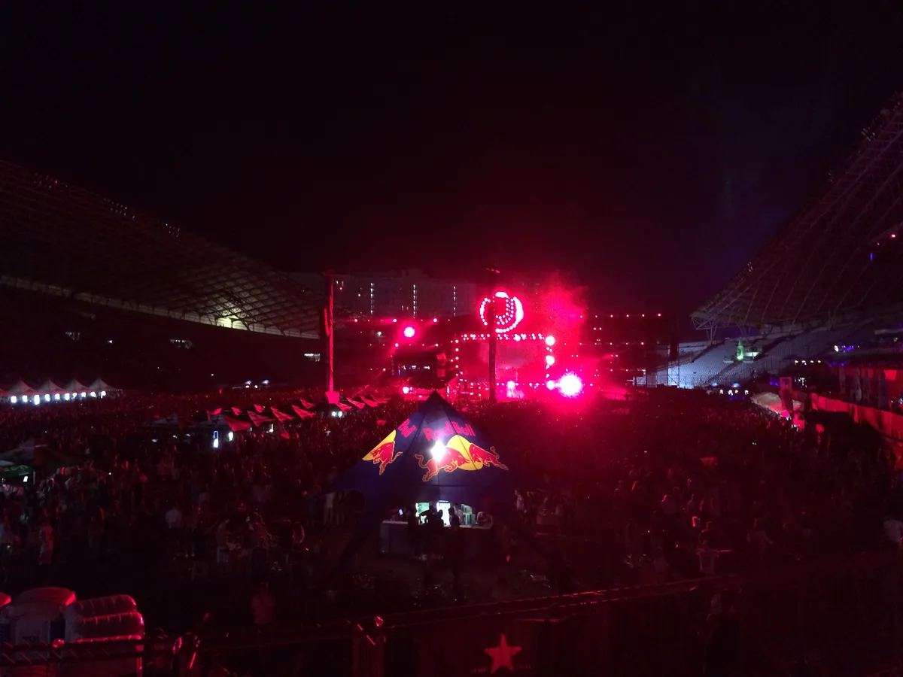
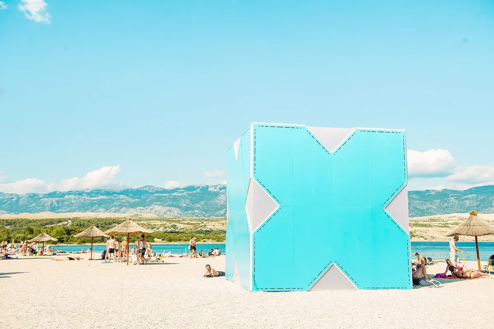
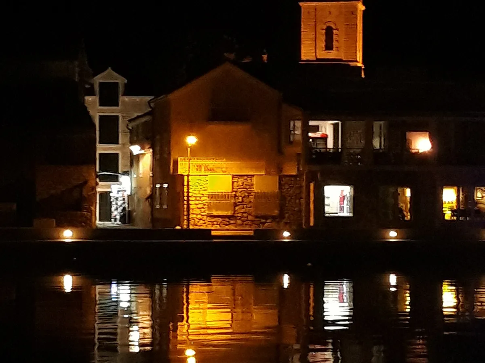
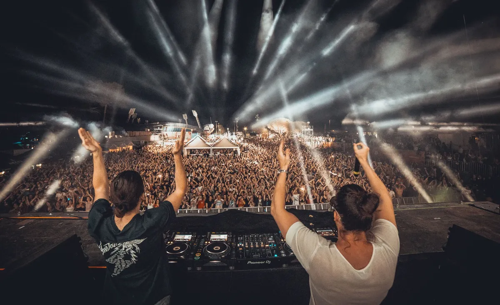
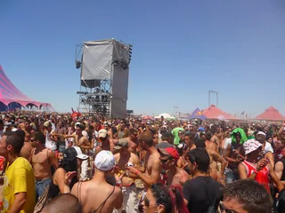
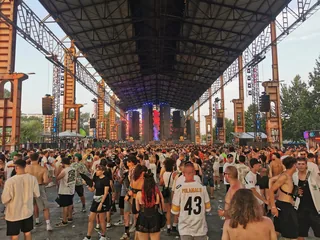

Festival guide, 2027
The best music festivals in Croatia in 2027
Croatia's summer festivals compared by sound and setting, from a park in Split to the beach clubs of Zrće and the seaside site in Tisno, with the 2027 dates that are confirmed and the ones that are not.
A list meant for choosing.
Croatia's festival summer runs along the Adriatic coast from late May to the end of August. Ultra Europe fills a park in Split in July, Hideout takes over Zrće beach on the island of Pag at the start of the month, and the small town of Tisno hosts a run of festivals from late June to the end of August.
How this list was chosen.
A festival is on this list when these three things are true:
- Electronic or dance music is at the centre of the programme, with one exception explained below.
- It has run recently, and it has either published a 2027 edition or given no sign of stopping.
- It adds something the others lack: a different sound, a different town or a different way of spending the days.
A date from the festival's own site is shown as confirmed. A date found only on a listing site is marked as listed, and should be treated as provisional until the festival publishes it.
Croatia music festival dates for 2027 at a glance.
July is the crowded month. Hideout, Hospitality on the Beach, Ultra Europe, Love International, Terminal V Croatia and Outlook Origins all fall between 29 June and 26 July, and Tisno hosts four of them back to back. August belongs to Dekmantel Selectors and Dimensions.
| Festival | Where | 2027 dates | Sound | Setting | Best for |
|---|---|---|---|---|---|
| Sea Star | Umag | Not announced (28 to 31 May in 2026) | EDM, dance | Seaside complex | An early start |
| INmusic | Zagreb | 27 to 29 June | Rock, alternative | Lake island | The capital |
| Hideout | Zrće, Pag | 29 June to 2 July | House, techno | Beach clubs | Club nights by the sea |
| Hospitality on the Beach | Tisno | Listed 30 June to 5 July | Drum and bass | Seaside site | The Hospital Records roster |
| Love International | Tisno | 7 to 13 July | Wide electronic | Seaside site, boats | A week by the sea |
| Ultra Europe | Split | 9 to 11 July | EDM, house, techno | Stadium park | The biggest names |
| Terminal V Croatia | Tisno | 15 to 19 July | Techno | Seaside site | Techno by the sea |
| Outlook Origins | Tisno | 22 to 26 July | Bass music | Seaside site | Dub, dubstep and more |
| Dekmantel Selectors | Tisno | 19 to 23 August | House, techno and beyond | Seaside site | Dekmantel by the sea |
| Dimensions | Tisno | 26 to 31 August | Wide electronic | Seaside site | The end of summer |
What is the biggest music festival in Croatia?
Ultra Europe is the biggest festival on this list: it reported more than 150,000 people in 2023. It is the European edition of Miami's Ultra Music Festival, and Croatia has hosted it every July since 2013, the two pandemic years aside.
Ultra Europe, Split
Ultra Europe has been held at Park Mladeži, a sports park in Split, since 2019. The 2027 edition is on 9 to 11 July, for ages 18 and over. The music is mostly big-room EDM, house and techno, and the weekend often carries on with boat parties and island events. The Ultra guide covers its history.

Which Croatian festivals are on Zrće beach?
Zrće, near Novalja on the island of Pag, is a beach of open-air clubs that stay open through the night in summer. Hideout uses five of them.
Hideout, Zrće
Hideout is held across five open-air venues on Zrće beach, with boat parties between them. The 2027 edition is on 29 June to 2 July. The 2026 edition sold out within an hour, so tickets go quickly.

What are the festivals in Tisno?
Tisno is a small town on the island of Murter, joined to the mainland by a bridge, and several festivals share The Garden Resort, a site by the sea.
Love International, Tisno
Love International is on 7 to 13 July 2027, on five stages and two boats, for ages 18 and over. It carries on from The Garden Festival, which first took place in Croatia more than 20 years ago, and it runs for a week, with boat parties.
This is DJ Subaru at Love International in 2026, recorded by The Lot Radio.
Terminal V Croatia, Tisno
Terminal V, the Scottish techno festival, holds its Croatian edition in Tisno. The 2027 edition is on 15 to 19 July, after a 2026 edition the organisers called its largest so far.

Hospitality on the Beach, Tisno
Hospitality on the Beach is the beach festival of Hospital Records, listed for 30 June to 5 July 2027.
Outlook Origins, Tisno
Outlook Origins books UK soundsystem music, from dub to drum and bass. The 2027 edition is on 22 to 26 July.
Dekmantel Selectors, Tisno
Dekmantel Selectors is the Amsterdam festival's sister event in Tisno, a five-day festival at The Garden Resort. The 2027 edition, its 11th, is on 19 to 23 August. See the Dekmantel guide.
Dimensions, Tisno
Dimensions is the last festival of the Tisno summer, on 26 to 31 August 2027.
Which other music festivals in Croatia are worth the trip?
Two festivals sit away from the Dalmatian coast.
Sea Star, Umag
Sea Star is held at the Stella Maris complex in Umag, on the Istrian coast in the north-west, close to the Slovenian border. The 2026 edition was on 28 to 31 May, which makes it the first big date of the Croatian season, and the 2027 dates have not been announced. The festival reports almost 50,000 fans in 2026, its eighth edition.

INmusic, Zagreb
INmusic is the exception to the first test: it is a rock and alternative festival, held on the Isle of Youth at Lake Jarun in Zagreb. The 2027 edition is on 27 to 29 June.
Not on this list, and why.
These are festivals people ask about that fall outside the tests above.
- Sonus. The 2026 edition at Zrće was cancelled, and no 2027 date has been announced.
- Defected Croatia. The last Defected Croatia in Tisno ran on 29 July to 3 August 2026, billed as One Last Dance. Defected has said it will offer something new in 2027 but has not named it.
How to choose.
Look at the calendar. Hideout and Hospitality on the Beach overlap at the start of July, and Ultra Europe follows on 9 to 11 July, so a long trip can take in more than one. Check dates with the festival before you book travel. Hospitality on the Beach's date comes from a listing site and is provisional until the organiser publishes it. For festivals across the rest of the continent, see the best electronic music festivals in Europe.
Croatia music festivals FAQ.
What is the biggest music festival in Croatia?
Ultra Europe in Split is the biggest festival on this list, with more than 150,000 people reported in 2023. Its 2027 edition is on 9 to 11 July at Park Mladeži, for ages 18 and over.
What festivals are in Tisno in 2027?
Hospitality on the Beach (listed 30 June to 5 July), Love International (7 to 13 July), Terminal V Croatia (15 to 19 July), Outlook Origins (22 to 26 July), Dekmantel Selectors (19 to 23 August) and Dimensions (26 to 31 August).
When is Hideout 2027?
Hideout 2027 is on 29 June to 2 July at Zrće beach, near Novalja on the island of Pag.
Is Defected Croatia happening in 2027?
No. The last edition in Tisno was in 2026. Defected has said it will offer something new in 2027 but has not named it.
Sources.
- 2027 dates from each festival's own site: Ultra Europe (and its ticket page for the age limit), Hideout, Love International, Outlook Origins, Terminal V Croatia, Dekmantel Selectors, INmusic, Dimensions.
- Listed date: Technoairlines on Hospitality on the Beach. Terminal V's 2026 edition: Mixmag.
- Past editions: Sea Star.
- Sonus: Zrće. Defected Croatia: a message from Defected's chief executive.
- Ultra Europe's 2023 attendance and history: this site's guide to each, linked above, which cites its own sources.
Continue reading
Read next.
 Festivals~6 min read
Festivals~6 min readBest New Year's Eve Festivals 2026 into 2027
Countdown NYE, Decadence, HiJinx, Rhythm and Vines and Awakenings: the best New Year's Eve festivals for dance music in 2026, with dates and where they are.
Read article →
Festivals~7 min readMonegros Desert Festival 2027: Date, History and Guide
One long electronic event on exposed land near Fraga, with roots in Florida 135 and stages running through the night.
Read article →
Festivals~14 min readBest Electronic Music Festivals in Europe 2027, Compared
Fourteen major festivals and seven smaller ones, from Tomorrowland to Garbicz, compared by sound, scale, setting and 2027 dates.
Read article → Festivals~7 min read
Festivals~7 min readSziget Festival 2027: Dates, Music, Camping and Travel
Five days on Óbuda Island, with pop, rock and hip-hop beside club stages, theatre, circus and a rail link into Budapest.
Read article →Want something to play while you read? Let the Selector pick a DJ set.